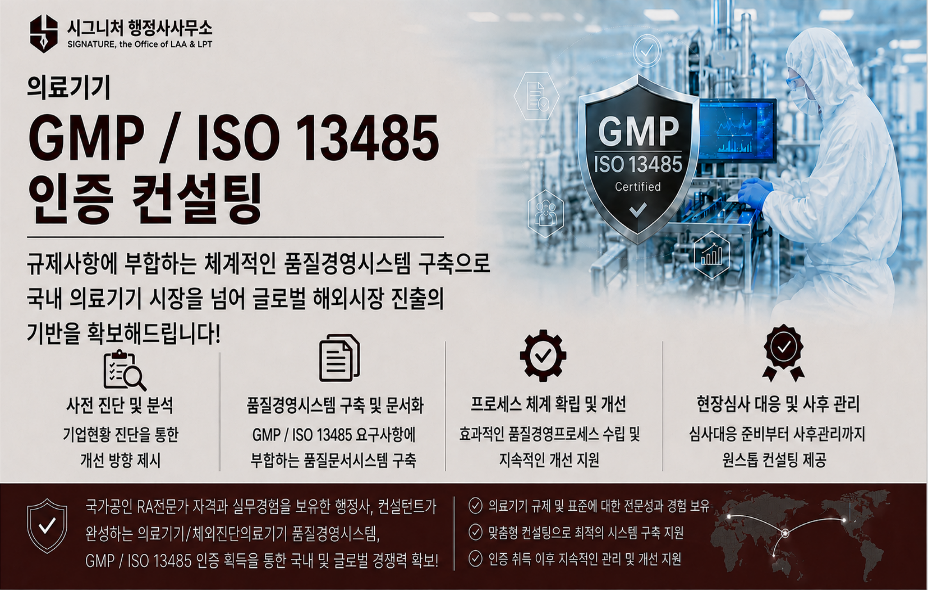
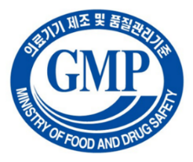
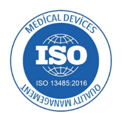
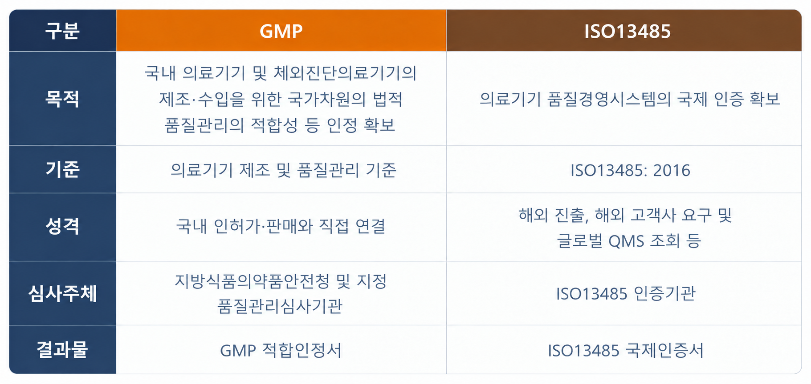
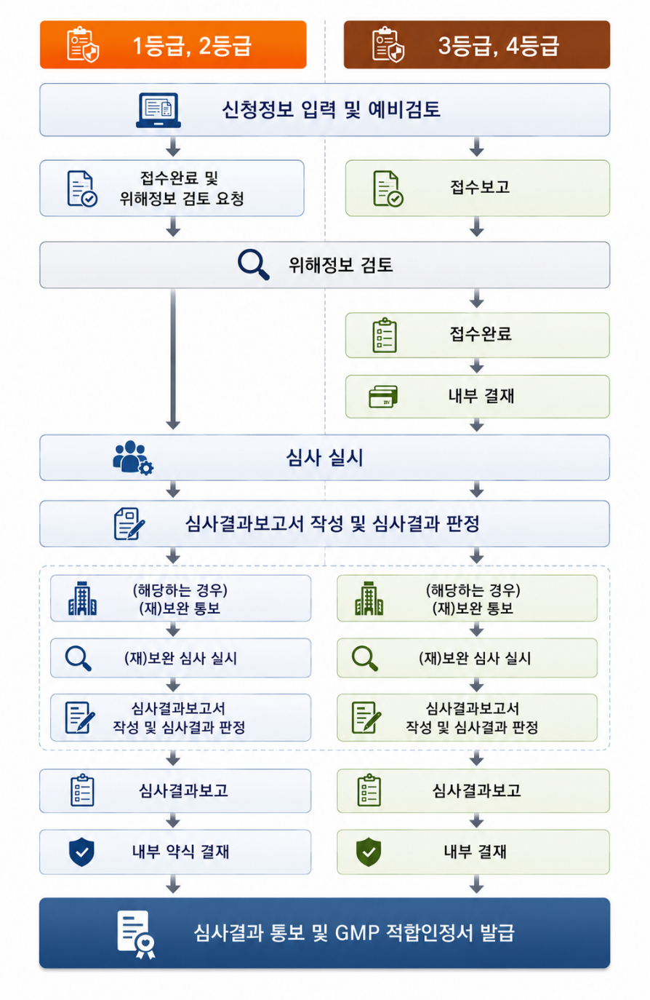

GMP/ISO 13485 인증 컨설팅
시그니처 행정사사무소의 GMP / ISO 13485 인증 컨설팅
시그니처 행정사사무소에서는 「국가공인 의료기기 RA전문가 자격」과 「의료기기 업계 실무경험」을 갖춘 행정사, 컨설턴트가 의료기기 및 체외진단의료기기 제조업체가 안전하고 유효하며 의도된 용도에 적합한 품질의 의료기기를 일관성 있게 생산하고, 국내 GMP 기준과 ISO 13485 국제 표준규격의 요구사항을 충족하는 기업 맞춤형 의료기기 품질경영시스템을 구축하고 운영할 수 있도록 지원합니다.
기업의 제품 특성, 제조 공정, 조직 구조 및 기존 품질문서 체계 등을 면밀히 검토하여 품질매뉴얼, 각 분야별 절차서, 지침서, 기록양식 등 최적의 품질문서 체계를 구축하고 현장에서의 기록과 실제 운영시스템이 상호 연동되는 실질적인 품질경영시스템 체계가 구축·운영될 수 있도록 컨설팅 서비스를 제공합니다.

GMP / ISO 13485 인증 컨설팅, 이런 기업이 필요합니다!
- • 의료기기 제조업 허가 및 GMP 최초인증 준비가 필요한 기업
- • 체외진단의료기기 품질문서 체계를 처음 구축하는 기업
- • 기존 품질문서 체계가 실제 업무 및 기록과 연동되지 않아 조치가 필요한 기업
- • GMP 정기심사 또는 변경심사를 앞두고 제반 품질문서의 점검이 필요한 기업
- • ISO 13485 최초인증 후 사후심사를 준비하는 기업
- • 고객불만, CAPA, 변경관리, 내부심사 운영 체계 등을 개선하고자 하는 기업
GMP / ISO 13485 인증 컨설팅 서비스
시그니처 행정사사무소에서 제공하는 컨설팅 서비스 항목은 아래와 같습니다.
- • 품질경영시스템 현황 진단
- • GMP(인체용·동물용) / ISO 13485 품질경영시스템 구축
- • 품질매뉴얼, 절차서, 지침서, 기록양식 작성 지원 및 대행
- • 국내 및 국외(필요시, 유럽·북미 등) 규제 요구사항 검토 및 QMS 체계 수립
- • 변경관리 절차 수립
- • 방침관리 및 경영검토 절차 수립
- • 인적자원 관리 체계 수립
- • 제조환경 및 제조장비 관리 체계 정비
- • 구매 및 공급업체 관리 체계 구축
- • 설계·개발 관리 및 위험관리 체계 구축
- • 부적합품 관리 및 시정·예방조치 체계 구축
- • 고객불만 및 피드백 관리 절차 수립
- • 내부심사 및 시험검사 관리 체계 수립
- • 심사 대응 및 보완자료 작성 지원
- • 기타 필요 항목
“GMP 적합성인정 / ISO 13485 국제인증 획득,
국내 의료기기 시장을 넘어 글로벌 해외시장 진출의 기반을 확보해드립니다!”
지금 바로 상담 신청하세요!
《참고 - 의료기기 GMP / ISO 13485》
의료기기 GMP(Good Manufacturing Practices) / ISO 13485란,
의료기기 GMP
의료기기 GMP는 의료기기의 설계·개발부터 제조, 출하, 시판 후 관리 등 전 수명주기에 걸쳐 품질경영시스템의 확보를 통해 안전(safe)하고 유효(effective)하며, 의도된 용도(intended use)에 적합한 품질의 의료기기가 일관성 있게(consistently) 제조·판매됨을 보장하는 품질경영시스템의 최소한의 요구조건을 의미합니다.

ISO 13485(Medical Devices - Quality Management Systems - Requirements for Regulatory Purposes)
ISO 13485는 「의료기기 – 품질경영시스템 – 규제 관련 요구사항」을 명시한 의료기기 분야의 국제인증규격이며, 의료기기를 제조하거나 의료기기 관련 서비스를 제공하는 조직의 의료기기 품질경영시스템에 대한 국제인증 요구사항을 규정한 것입니다.
총 8개의 chapter로 구성되어 있으며, 이 가운데 인증 심사범위에 해당하는 chapter는 5개의 chapter가 있고, 가장 최신의 개정 규격으로는 ISO 13485:2016(3rd edition)이 있습니다.

GMP 와 ISO 13485의 비교
국내 의료기기 GMP는 ISO 13485:2016을 기본으로 하여 「의료기기 제조 및 품질관리 기준」에 따라 규정되고 운영되고 있으며, 식품의약품안전처는 GMP 운영과 관련하여 기본 지침, 가이드라인 및 관련 고시 등을 통하여 GMP 인증심사와 운영의 기준을 제시하고 있습니다.
ISO 13485는 의료기기 산업에 특화된 품질경영시스템 요구사항을 규정한 국제 표준규격이며, 규제 요구사항과 고객의 요구를 충족하는 의료기기 품질경영시스템의 구축에 적용됩니다.

의료기기 GMP 적용 대상
- • 의료기기 제조·수입 허가나 인증을 받거나 제조수입 신고를 하고자 하는 자
- • 임상시험용 의료기기를 제조·수입하고자 하는 자
- • GMP 적합성인정 등 심사를 받고자 하는 의료기기 제조수입업자
- • 품질관리 심사기관으로 지정 받았거나 지정 받으려고 하는 자
의료기기 GMP 심사의 종류
- • 최초심사 - 의료기기 제조소가 GMP 기준에 적합함을 인정받기 위해 처음으로 받는 심사
- • 정기심사 - GMP 적합성인정을 받은 제조소가 매 3년마다 GMP 적용실적에 대해 받는 심사
- • 추가심사 - 다른 품목군의 의료기기를 추가하여 제조·수입하고자 하는 경우 받는 심사
- • 변경심사 - 제조소의 소재지를 변경하는 경우 받는 심사
의료기기 GMP 심사 기준
의료기기 GMP 인증심사의 기준은 「시설과 제조 및 품질관리체계의 기준」(의료기기법 시행규칙 제8조의 제1항)과 「의료기기/체외진단의료기기 제조 및 품질관리 기준」(식약처 고시) 등에 근거하고 있습니다.
의료기기 GMP 심사 절차
등급별 의료기기 GMP 인증심사는 일반적으로 아래의 흐름도와 같은 절차를 거치게 됩니다.
